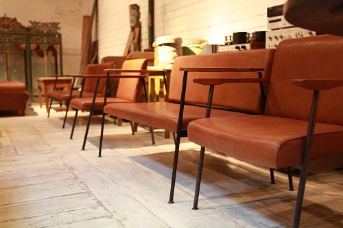
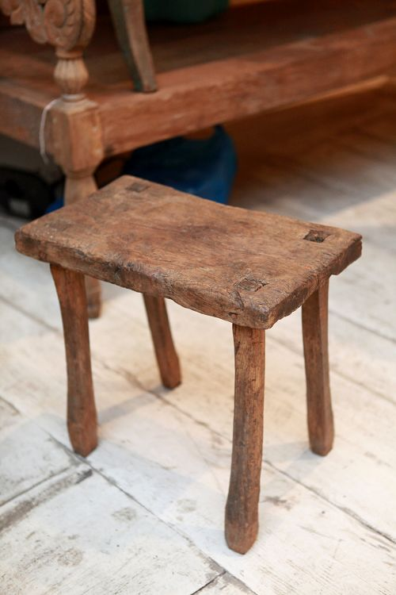
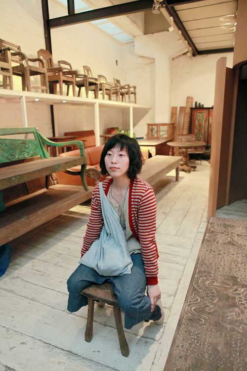
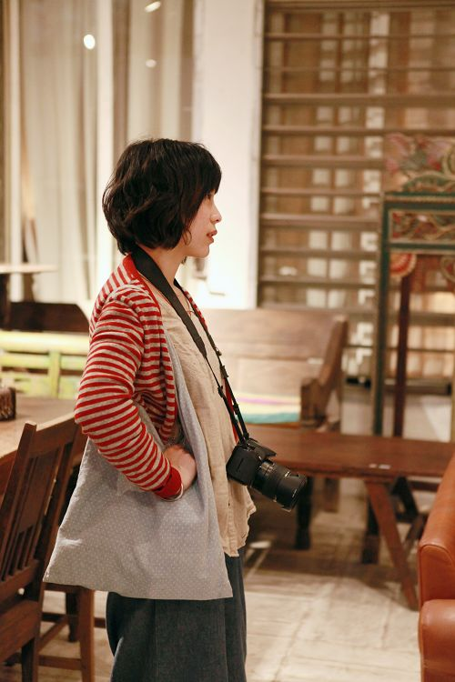

老家具店@LOFT @ May 13, 2010
扑土和问问忽然从走廊欣喜地扑进LOFT的老家具店。据说是东南亚进口的老家具，真的很古老，家里有老家具的尽管收好，是支升值股也说不准呢，如果舍得出售的话。这些家具沉稳、塌实、储存着记忆甚至是岁月的味道，让人完全可以尽情的使用它们。


扑土爱的两人坐沙发，她对偶的后备箱么滴信心，否则肯定拖一个回南京唠。



地板的缝隙居然卡住了我的鞋带，鞋带被缝隙一拽全散唠。

这个倒扣着的茶杯，店家私人用品，不卖不卖。。。

我们爱的歪脚凳，被问问带回家唠。偶今天去她家蹭饭，看到上面蹲着两盆健壮滴植物。。。

喜欢得坐上面不愿意离开哦。

W君拎着歪脚凳砸场子去。

狠心发誓以后一定用这种实木桌子，划痕、油渍、灰尘啥的统统欢迎，频繁使用才更有岁月的光泽。现在市场上大多数家具没有老家具的涵量，得小心呵护着。

欣赏老家具，即使不能全部带回家，也让人心满意足。

偶超爱的色调与质感，这款复古的沙发所用的材质不是头层皮或二层皮，也不是前面全牛皮边角部分合成革，它就是实实在在整张牛皮制作。货真，价实不实没敢问。

就要离去，再留恋地坐一坐。

老家具是不是不会用铁钉呢？感觉这张椅子直接凿出来，再没有任何加工。

33 Responses to “老家具店@LOFT”
2010-05-14
。。。我啃出来咯，是真牛皮~！
2010-05-14
哈哈哈哈~偶想把那个沙发拖回家每天坐上面喝茶~
2010-05-14
某人说，我面前就差一个讨饭的破碗。。。
2010-05-14
最后一张，哈哈哈，笑得我腰闪了～～～
2010-05-14
你的小腰闪了可没人帮你揉，悠着点哦~
2010-05-14
那个最后一把椅子太美老…你们合照后面的绿色小桌子我正好可以放缝纫机。。。。。呀呀呀~我下次要去掏！！！（每件我都眯着眼睛查找看，都美的不行来）
2010-05-14
俺们刚坐上沙发你们木板凳了 ：）
俺们刚吃上肉你们又菜了
俺刚娶上媳妇你们又独身了
俺们春节能回家了你们又开始出门旅游了
俺们刚能歇会儿不用擦汗你们又去健身房桑拿房流汗了
俺们刚吃饱穿暖你们又减肥挂肚兜露脐了
俺们刚把青菜上的害虫灭掉你们又爱吃虫啃过的青菜了
俺们刚喝上自来水你们又改喝山泉了
俺们刚把破内裤扔掉你们又开始在裤子上剪洞了
俺们刚住上小洋房你们又说要住一家一院的了
俺们要到城里去开开眼界你们又往乡下跑了
俺们才不吃野菜你们又说吃野菜好了
2010-05-14
老家具做装饰很不错的 但是河西仁恒国际的样板间有一把老椅子做客厅装饰 我就十分喜欢~
2010-05-14
上次说的第二张，是你相片里有张照片是一个女孩朝你看呢，你文字里说后来你又给她照了一张，她还挺配合的笑了笑，我说的就是那个。这些旧家具真好看，你们的照片也好看。我现在每天都很期待你们的更新，每次看完感觉一阵风吹过，特清新。心情也舒畅了很多。
2010-05-14
你的照片拍得越来越好了哈。
2010-05-14
配的词太搞笑了！某君要去砸场子，哈哈哈！问问骑板凳的样子很可爱~
2010-05-14
五月，你要看第二张照片啊？可是我怎么能让你看到呢？
2010-05-14
这样家具日本也很受欢迎的。
但是很贵。没想到在南京有这么多这样自然，朴素的家具与杂货店。
我很喜欢的。
下次我逗留南京时请你带我去这样店一下。谢谢！
2010-05-14
冈本,来之前通知一声哦~
2010-05-14
LS送两个南澳出水的破碗我如何？
2010-05-14
to frank : 在美国，您这样的人，也很便宜吧？
2010-05-14
Frank喜欢对别人的爱好说三道四，好奇怪的人，不懂礼貌自以为是的人才应该有这种癖好。文明人应该懂得尊重别人。美国是有很多时尚的东西，比如IPAD, IPHONE, 跑车，LV, 但在美国的不光都是值钱的东西和人，有很多也是破烂。
2010-05-14
frank ；；；每个人都有喜欢自己一物或者多物的权利，你家全是新货和名牌又能说明什么呢？说明你年轻？还是有钱？当然也许这些你都没有。不过有没有不重要，因为没兴趣知道。哈哈哈哈
2010-05-14
frank你对旧物的意见这么大，你每天自杀和投胎一次，就天天都是新的罗～
2010-05-14
是，yard sale的二手货是便宜，你见过那些卖boutique家具的家具店卖得有多贵吗？那也是二手老家具。我最近还就在买家具，刚好知道点美国行情。
2010-05-14
茶，玫瑰去南京出差，给你发了email说去看你的狗狗，不过你可能没看到。她已经回北京了。
2010-05-14
我也喜欢旧东西，如果说这是奇怪，那么奇怪也不是什么可耻的事情，也不介意你这么说。没人说所有旧东西都是宝贝，自己不喜欢的就说是破烂，我倒是建议你还是去看看心理医生先。等回复健康了，再来网络游玩。
2010-05-14
to frank : 什么是旧东西？用过的东西本来的面貌但依然保持良好的性能？什么是破烂儿？是旧东西已经失去了继续使用的性能。
你呢？是被人用过的吗？旧东西还是只是靠LV，IPAD，IPHONE裹着的破烂儿？
2010-05-15
不同的声音是建立在彼此尊重的基础上。没有尊重咱也放开来说几句：新旧不是问题，价格不是问题，选择也不是问题，心态健康与否才是问题。您老在国内同胞面前找忧越感找错地儿了。请问您有什么高雅爱好？說出来震震咱们?！
2010-05-15
茶，你不应该把那个Frank的留言删了，这样才知道他有多没见过市面。
2010-05-15
你说的一点没错，新家具的架势好像餐桌，恨不得用几层布裹着，不能伤了划了的。。。还是那种有岁月痕迹有人的油饭的油菜的油啥的，还有些碗底锅底的划痕，以及木料本身的纹理。。。才天人合一啊。
2010-05-17
请问老家具店的地址在哪里？
2010-05-17
话说我姥姥家有两把太师椅，年代久远，将近有100年了，据说是以前地主家的。某年回村看望，得知被我姥姥以20块钱卖掉了，我爸气急败坏，脸都绿了，直斥他丈母娘有眼无珠。
2010-05-17
上这个网址找找蜜桃咖啡的地址：http://www.metoocafe.com/index2.html
老家具店和它在一个LOFT里。
20块钱卖的是文物哇。。。。无语唠。
2010-05-18
哇,这么热闹,本少爷错过了.光光说得对,留言删了,我后来的人,也插不上嘴了啊…
2010-05-18
可惜不在南京，而且家里的风格也不搭，但是可以去欣赏一下，很特别，很有故事
2010-05-18
《都市周报》似乎特别报道过这个收藏老家具的店主，也是个设计师。当时也想过要去看看。。
2010-05-18
美女，别怪我扫兴，可能对于迷信的人，老家具别有一番寒意吧~~~~
Leave A Reply
存档只读，评论已关闭。